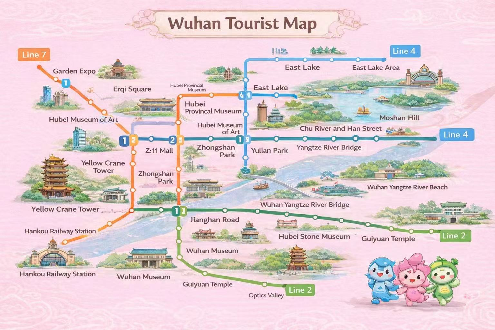
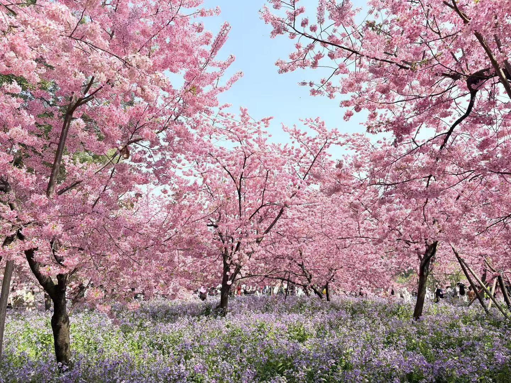
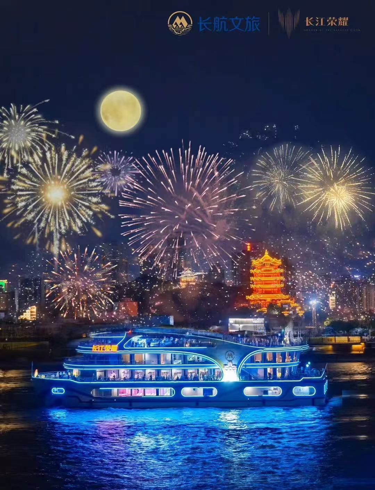
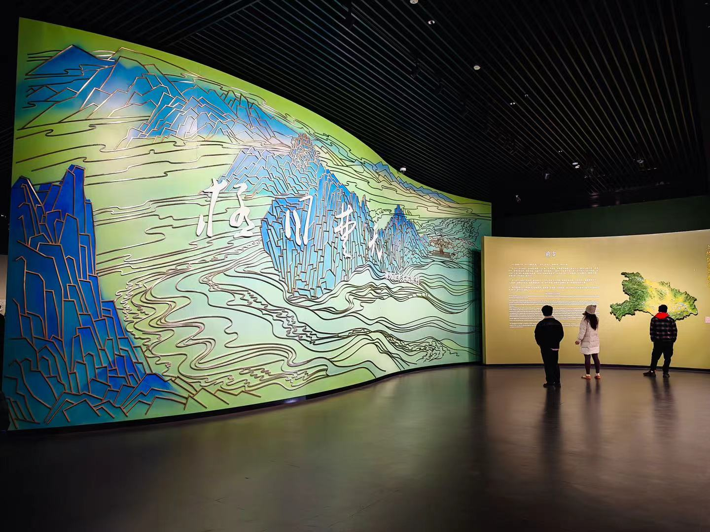

Yellow Crane Tower
A legendary ancient tower overlooking the Yangtze River, a symbol of Wuhan.
Discover the iconic landmarks and natural beauty of Wuhan
A legendary ancient tower overlooking the Yangtze River, a symbol of Wuhan.
China's largest urban lake, with stunning natural scenery and cherry blossoms.
The first bridge over the Yangtze River, a landmark of Wuhan's engineering history.
Home to the famous Bianzhong bells, showcasing Hubei's ancient culture.



